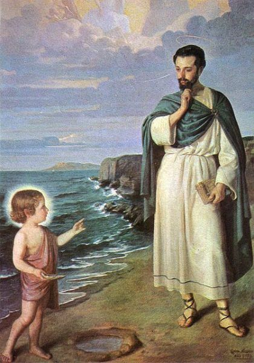
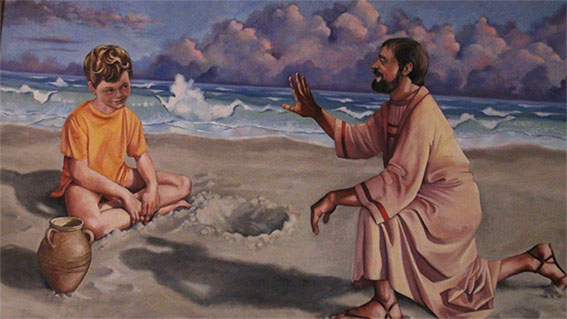

En un día soleado y tranquilo, en la costa de África, vivió un momento que trascendería el tiempo y tocaría los corazones de generaciones venideras. Era el año 386 d.C., y un hombre atormentado por sus propias luchas internas caminaba por la playa en profunda meditación. Este hombre no era otro que Agustín de Hipona, quien posteriormente sería conocido como Santo Agustín, uno de los más influyentes pensadores y teólogos de la Iglesia Católica.
Agustín había estado inmerso en una búsqueda espiritual, cuestionando su propósito y la existencia de Dios. Mientras paseaba con el corazón pesado, notó a lo lejos a un niño pequeño jugando en la orilla. El niño corría hacia el agua con una concha en la mano, llenándola y vertiéndola en un pequeño agujero en la arena.
Intrigado por la actividad del niño, Agustín se acercó y le preguntó: "Pequeño, ¿qué estás haciendo?" El niño miró a Agustín con una sonrisa radiante y respondió: "Estoy tratando de vaciar el mar en este hoyo en la arena". Agustín, consciente de la imposibilidad de tal tarea, sonrió con ternura ante la inocencia del niño y dijo: "Pero eso es imposible, querido niño. El mar es demasiado grande y este agujero es demasiado pequeño".
El niño se rió suavemente y, mirando a Agustín a los ojos, pronunció unas palabras que resonarían profundamente en su alma: "Así es como intentas comprender a Dios con tu mente limitada. Tu mente es el agujero y Dios es el mar infinito. Aunque no puedas comprenderlo completamente, todavía puedes experimentar su grandeza y amor".
Las palabras del niño resonaron en el corazón de Agustín como un eco divino. En ese instante, algo dentro de él cambió para siempre. Agustín sintió una oleada de paz y comprensión que nunca antes había experimentado. Se dio cuenta de que su búsqueda intelectual no podía capturar la vastedad de la divinidad y que la verdadera fe residía en entregarse a lo incomprensible con humildad y amor.